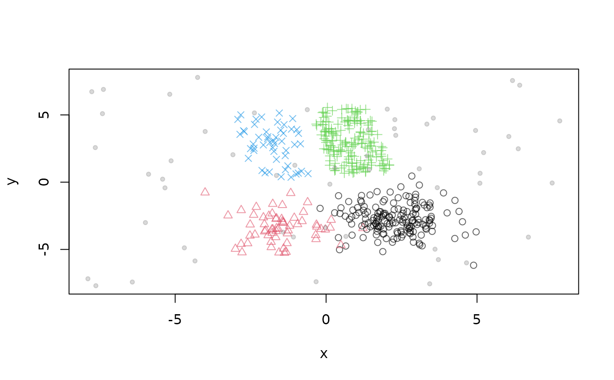

Data Stream Generator for Bars and Gaussians
Source:R/DSD_BarsAndGaussians.R
DSD_BarsAndGaussians.RdA data stream generator which creates the shape of two bars and two Gaussians clusters with different density.
See also
Other DSD:
DSD(),
DSD_Benchmark(),
DSD_Cubes(),
DSD_Gaussians(),
DSD_MG(),
DSD_Memory(),
DSD_Mixture(),
DSD_NULL(),
DSD_ReadDB(),
DSD_ReadStream(),
DSD_Target(),
DSD_UniformNoise(),
DSD_mlbenchData(),
DSD_mlbenchGenerator(),
DSF(),
animate_data(),
close_stream(),
get_points(),
plot.DSD(),
reset_stream()
Examples
# create data stream with three clusters in 2D
stream <- DSD_BarsAndGaussians(noise = 0.1)
get_points(stream, n = 10)
#> x y .class
#> 1 -1.57680878 3.952047 4
#> 2 3.10325388 -4.787931 1
#> 3 2.95586698 -2.940560 1
#> 4 1.87920308 1.398521 3
#> 5 0.06656601 2.600465 3
#> 6 -0.75723004 -4.140459 2
#> 7 1.75054455 -1.853142 1
#> 8 0.71817119 2.600374 3
#> 9 -2.56848599 3.444262 4
#> 10 -1.15812960 -2.079070 2
plot(stream)
